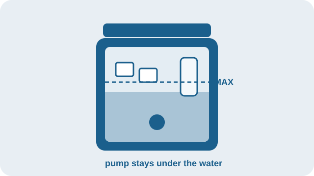
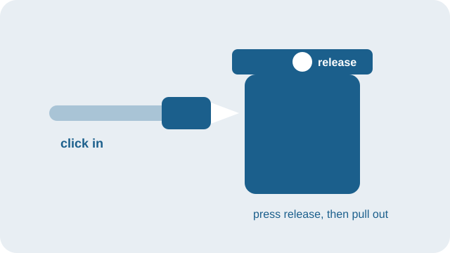
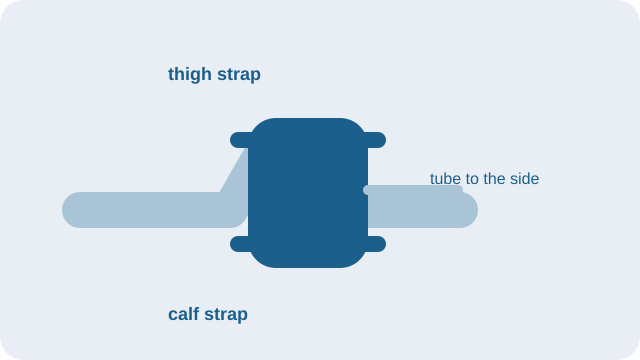

POGGKT
Click, Chill, Recover
Wireless Remote Cold Therapy System
C1-K
Knee
About 30 seconds to start.
Watch on YouTube30-second setup
Fill the tank

Add ice cubes first, then water.
Or use frozen water bottles, then add water.
Bottles are not in the box.
Stay below the MAX line.
Keep the pump under the water.
The cooler does not make cold.
Connect the hose

Push the connector into the lid until it clicks.
To take it off, press the release, then pull it straight out.
Plug the adapter into the cooler, then into the wall.
Wear the wrap

Set the pad on a thin cloth over the kneecap.
Upper strap around the thigh.
Lower strap around the calf.
One finger should slide under each strap.
Keep the tube off to the side, not under the leg.
Do not buckle a strap on the tube.
Remote

Short-press Power to turn it on or off.
No pairing.
Time On and Time Off: 5 to 60 minutes, in steps of 5.
Flow L1 is slowest. L4 is fastest. Start at L2.
The screen goes dark after about 10 seconds.
Waking the screen does not change the setting.
Two AAA batteries are required. They are not in the box.
Do
- Use ice and water, or frozen bottles and water.
- Keep a thin, dry cloth between the pad and your skin.
- A common start is 20 minutes on, 40 minutes off, at L2. That is an example, not a treatment plan.
- Look at the skin every 1 to 2 hours.
Don’t
- The cooler does not make cold. It only holds cold from the ice or the bottles. Do not add hot water.
- Do not run the pump with no water in the tank.
- Do not sleep with the pad on unless your doctor agrees, and someone can check the skin.
- Stop if the skin is numb, painful, very red, white, blue, or blistered.